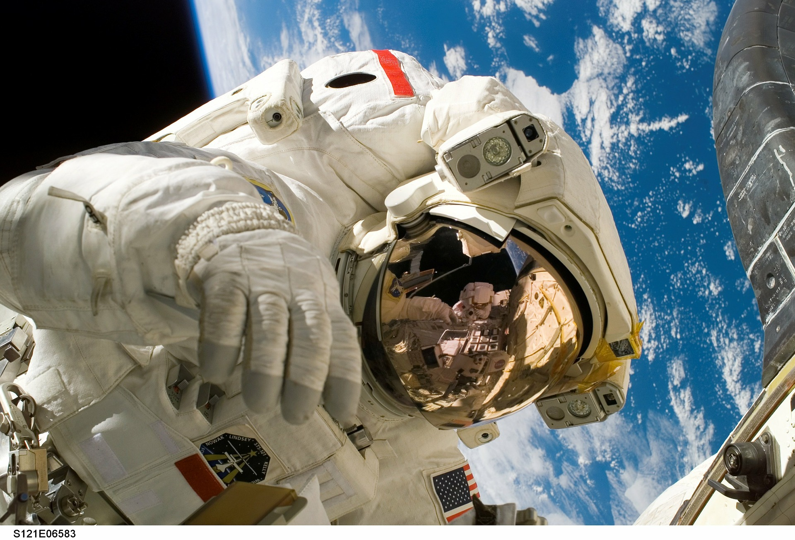

Human Cyborg
How would the world look like if Musk was right? Together with Elke Hackl (Austria) and Borg Bad
Leonfelden (Austria)
BOZAR presents a workshop for kids and youngsters between 10 and 17 years old on the topic of
human cyborgs.
Together they imagine how these cyborgs could look and approximate what could be possible
tomorrow, such as
cybernetic hybrid organisms and functionally improved human or humanoid life forms.
Elon Musks „Starlink“-Satellitennetz steht kurz vor dem Testbetrieb
Elon Musks „Starlink“-Satellitennetz steht kurz vor dem Testbetrieb
Es fehlt noch ein einziger Raketenstart, dann ist die kritische Masse von 600 Satelliten
erreicht, die nötig ist,
um den Probebetrieb aufzunehmen. Pro Start bringt die SpaceX-Rakete bis zu 60 Satelliten in die
Umlaufbahn.
Mit relativ kleinen Sat-Schüsseln sollen unterversorgte Gebiete im Norden der USA und Kanada
vorerst mit 100 Mbit/sec
angeschlossen werden. Bis Jahresende sollte laut Plan bereits die gesamte erste Serie von 1.584
Satelliten in 550
Kilometer Höhe um die Erde kreisen, sicher ist das nicht. Wie aus den Eingaben der Firma
hervorgeht, wurden Komponenten
und sogar die Architektur des Starlink-Netzes laufend Veränderungen unterzogen.
Von Erich Moechel
Elon Musk steht mit seinem Starlink-Satellitenprojekt kurz vor dem Erreichen des ersten großen
Etappenziels.
Es fehlt nur noch ein Raketenstart, dann ist die kritische Masse von 600 Satelliten erreicht,
die nötig ist, um den
Testbetrieb mit Internet via Satellit für einen Teil der Welt aufzunehmen. Erst im Juli hatte
Musk beim US-Regulator
FCC seine US-Lizenzen auf fünf Millionen Terminals am Boden für Endkunden aufgestockt.
“Humans must become Cyborgs to stay relevant”
Elon Musks
Großer Geheimniskram um Laserlinks
 Erst im April wurden die geplanten Flughöhen völlig geändert. Statt zwischen
750 und 1200 Km Höhe kreist die erste Tranche der Satelliten nun einheitlich
in etwa 550 Km Höhe um die Erde. Was der Grund für diesen großen Eingriff war,
ist derzeit nicht bekannt, wie sehr viel an technischer Basisinformation zu diesem
futuristischen Projekt noch völlig im Dunklen liegt. So hat die SpaceX-Tochter von
der FCC Geheimhaltung über den geplanten Einsatz von laserbasierten
Kommunikationstechnologien für superbreitbandige Datenlinks verlangt. Die technischen
Dokumente stehen deshalb unter Verschluss.
Pro Start kann die SpaceX-Rakete, die zuletzt Astronauten auf die ISS gebracht hatte,
bis zu 60 Satelliten transportieren. Laut Starlink werden mittlerweile sechs Satelliten
täglich produziert, die weitaus kleiner als herkömmliche geostationären Satelliten sind.
Mit je 250 kg zählen sie zu den Leichtgewichten am Satellitenhimmel, wenn man von den
kleinen würfelförmigen Cubesats absieht. Besondes viel wurde bis jetzt nicht über ihre
genaueren Eigenschaften bekanntgegeben. Man weiß nur, dass sie über einen Ionenantrieb
verfügen, wie er für Flüge im All gebräuchlich ist.
Starlink Mission
Dabei werden Gasteilchen durch eine Kathode zunächst ionisiert und in einem einem
elektrischen Feld beschleunigt. Anschließend passieren die einen sogenannten
Neutralisator, der dem Teilchenstrom neue Elektronen zuführt und ihn damit elektrisch
neutral macht, dadurch werden die Teilchen in Form eines Strahls ausgestoßen und damit
Schub erzeugt. In der Regel wird dafür das Edelgas Xenon herangezogen, Elon Musk als
Marketingmaschine betont natürlich, dass die Starlink-Satelliten die ersten seien, die
stattdessen Krypton einsetzen.
Die Fachliteratur sagt, dass damit mehr Schub erzeugt werden kann als mit Xenon aber auch,
dass Krypton schneller verbraucht wird und dass Krypton deutlich billiger ist. Musk geht
es also in erster Linie nicht um besondere Langlebigkeit, sondern um Manövrierfähigkeit
über größere Distanzen. Einen leistungsfähigen Antrieb brauchen diese Satelliten auch,
weil sie erst eine Serie von komplexen Flugmanövern absolvieren müssen, bevor sie in der
richtigen Flugbahn aufgefädelt sind.
Erst im April wurden die geplanten Flughöhen völlig geändert. Statt zwischen
750 und 1200 Km Höhe kreist die erste Tranche der Satelliten nun einheitlich
in etwa 550 Km Höhe um die Erde. Was der Grund für diesen großen Eingriff war,
ist derzeit nicht bekannt, wie sehr viel an technischer Basisinformation zu diesem
futuristischen Projekt noch völlig im Dunklen liegt. So hat die SpaceX-Tochter von
der FCC Geheimhaltung über den geplanten Einsatz von laserbasierten
Kommunikationstechnologien für superbreitbandige Datenlinks verlangt. Die technischen
Dokumente stehen deshalb unter Verschluss.
Pro Start kann die SpaceX-Rakete, die zuletzt Astronauten auf die ISS gebracht hatte,
bis zu 60 Satelliten transportieren. Laut Starlink werden mittlerweile sechs Satelliten
täglich produziert, die weitaus kleiner als herkömmliche geostationären Satelliten sind.
Mit je 250 kg zählen sie zu den Leichtgewichten am Satellitenhimmel, wenn man von den
kleinen würfelförmigen Cubesats absieht. Besondes viel wurde bis jetzt nicht über ihre
genaueren Eigenschaften bekanntgegeben. Man weiß nur, dass sie über einen Ionenantrieb
verfügen, wie er für Flüge im All gebräuchlich ist.
Starlink Mission
Dabei werden Gasteilchen durch eine Kathode zunächst ionisiert und in einem einem
elektrischen Feld beschleunigt. Anschließend passieren die einen sogenannten
Neutralisator, der dem Teilchenstrom neue Elektronen zuführt und ihn damit elektrisch
neutral macht, dadurch werden die Teilchen in Form eines Strahls ausgestoßen und damit
Schub erzeugt. In der Regel wird dafür das Edelgas Xenon herangezogen, Elon Musk als
Marketingmaschine betont natürlich, dass die Starlink-Satelliten die ersten seien, die
stattdessen Krypton einsetzen.
Die Fachliteratur sagt, dass damit mehr Schub erzeugt werden kann als mit Xenon aber auch,
dass Krypton schneller verbraucht wird und dass Krypton deutlich billiger ist. Musk geht
es also in erster Linie nicht um besondere Langlebigkeit, sondern um Manövrierfähigkeit
über größere Distanzen. Einen leistungsfähigen Antrieb brauchen diese Satelliten auch,
weil sie erst eine Serie von komplexen Flugmanövern absolvieren müssen, bevor sie in der
richtigen Flugbahn aufgefädelt sind.

Seine Zeit verbrachte er vor allem mit Lesen. Er sog das Wissen aus den Büchern auf –
und wandte es dann auf eine Weise an, die seine spätere Karriere zumindest erahnen ließ:
Mit zwölf Jahren schrieb er bereits den Code für ein Computerspiel, mit seinem Bruder
Kimbal und seinen Cousins mischte er Salpeter, Schwefel und Holzkohle oder
Bremsflüssigkeit und Chlorpulver, als Treibstoff für seine Modell-Raketen.
Er konnte es kaum erwarten, dieser Jugend zu entfliehen.
"Für jemanden wie Elon war Südafrika wie ein Gefängnis", sagt sein Bruder.
Mit 17 wanderte er deshalb nach Kanada aus, kurz darauf begann er dort ein Studium.
Sein großes Ziel lag aber weiter südlich: USA, Kalifornien, Silicon Valley. Zusammen mit
Kimbal machte er sich in den Semesterferien dort auf die Suche nach Geschäftsideen.